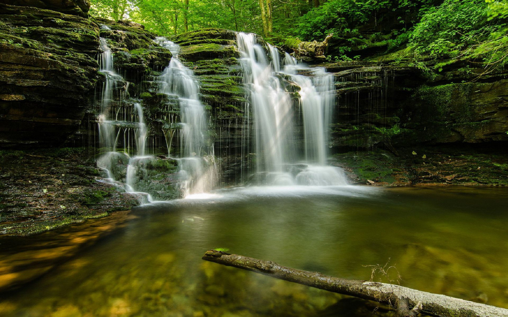
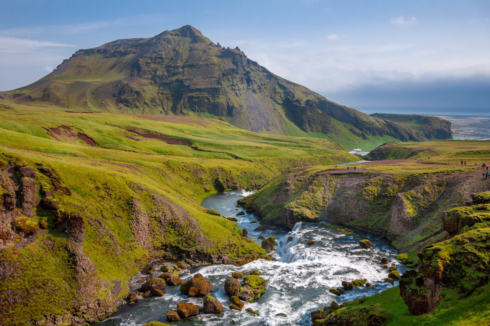
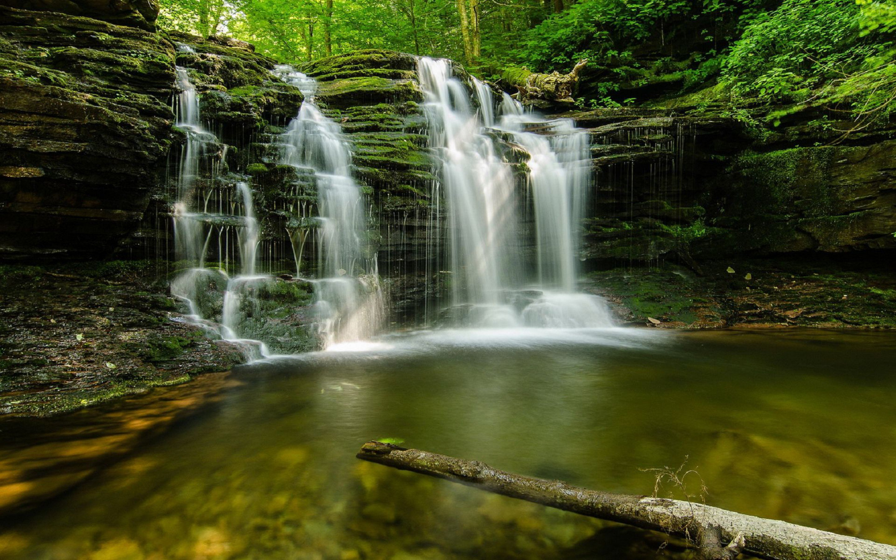
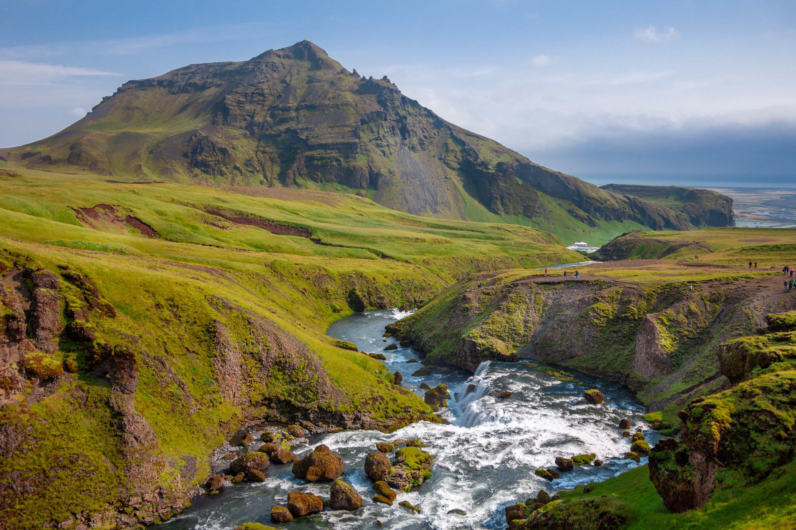

¿Qué es el agua?
El agua es un recurso natural esencial para la vida. Compuesta por dos moléculas de hidrógeno y una de oxígeno (H2O), es vital para todos los seres vivos y cubre aproximadamente el 71% de la superficie terrestre. Aunque es abundante, solo el 2.5% del agua en el planeta es dulce y adecuada para el consumo humano.
Importancia del Agua
El agua es fundamental para la vida, ya que desempeña roles cruciales en procesos como:
- Regulación de la temperatura corporal en los seres vivos.
- Sostenimiento de los ecosistemas acuáticos.
- Producción de alimentos a través de la agricultura y ganadería.
- Generación de energía hidráulica.
Video Destacado
Datos Curiosos
| Dato | Descripción |
|---|---|
| El agua en el cuerpo humano | El 60% del cuerpo humano está compuesto por agua. |
| Duración sin agua | Un ser humano puede sobrevivir solo 3 días sin agua. |
| La mayor fuente de agua dulce | El 68% del agua dulce está atrapada en glaciares. |
| Agua en el planeta | El 97% del agua en la Tierra es salada y no apta para el consumo. |
Galería
 


